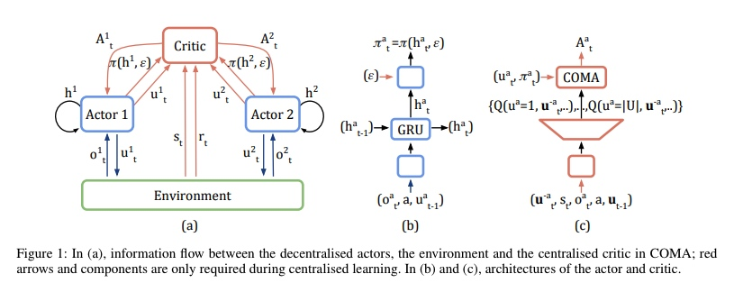
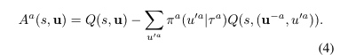
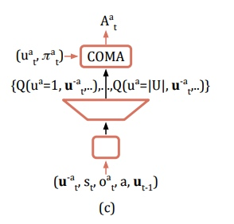

COMA
文章名称为《Counterfactual Multi-Agent Policy Gradients》，提出了一种新的多智能体行为批评方法——反事实多智能体(COMA)策略梯度。COMA使用一个集中的评论家来估计Q函数，而分散的参与者来优化智能体的策略。此外，为了解决多智能体信用分配的挑战，它使用了一个反事实基线，该基线将单个代理的行为边缘化，同时保持其他智能体的行为不变。COMA还使用了一种批评表示，它允许在单次向前传递中有效地计算反事实基线。
Introduction
集中训练，分散执行的两个挑战： 1、 如和更好的利用集中训练 2、 多智能体之间的信用分配问题，即每个智能体如何衡量自己对团队成功所做出的贡献。
COMA算法的三个思想： 1、 采用AC框架，集中训练，分散执行，每个智能体的策略条件只针对其自身的行动观察历史。 2、 COMA通过使用集中化的critic来计算一个优势函数，该函数将当前操作的值与一个反事实基线进行比较，该基线将单个智能体的操作边缘化，同时保持其他智能体的操作不变。因此，COMA并不依赖于额外的模拟，而是为每个智能体计算一个单独的基线，该基线依赖于集中的评论者来推理反事实，其中只有该智能体的行为发生了变化。 3、 COMA使用一种critic表示，它允许有效地计算反事实基线。在单个向前传递中，它根据所有其他代理的操作为给定代理的所有不同操作计算Q值。
算法框架

反事实基线计算优势函数
优势函数为

其中，后项为反事实基线。COMA没有使用额外的默认动作，不需要额外的前向模拟计算，而是利用当前的策略，利用当前的行为值函数。但是思想是一样的，只是转变了计算思路，即：评价当前动作的好坏不跟默认动作比了，而是跟当前策略的平均效果比。
高效的critic结构
面对随智能体数量增长而指数级增长的输出，COMA算法用了一个很巧妙的网络结构：将其他智能体的动作当做输入，而只保留单个智能体动作数目的输出。

参考
[1] Foerster J, Farquhar G, Afouras T, et al. Counterfactual multi-agent policy gradients[J]. arXiv preprint arXiv:1705.08926, 2017.